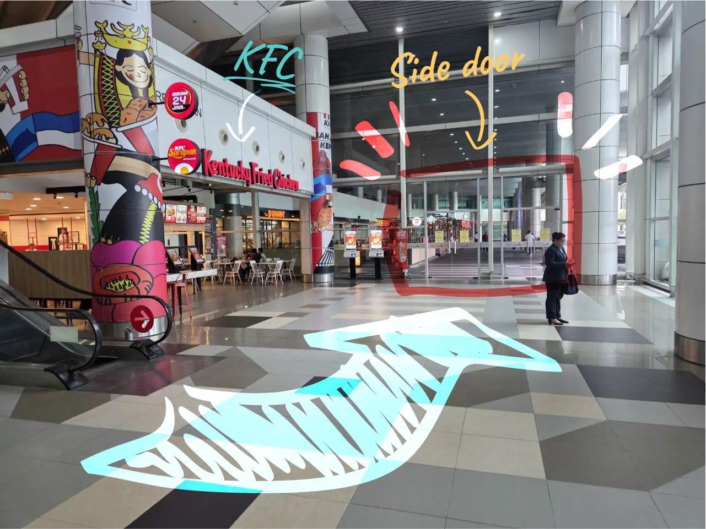
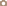
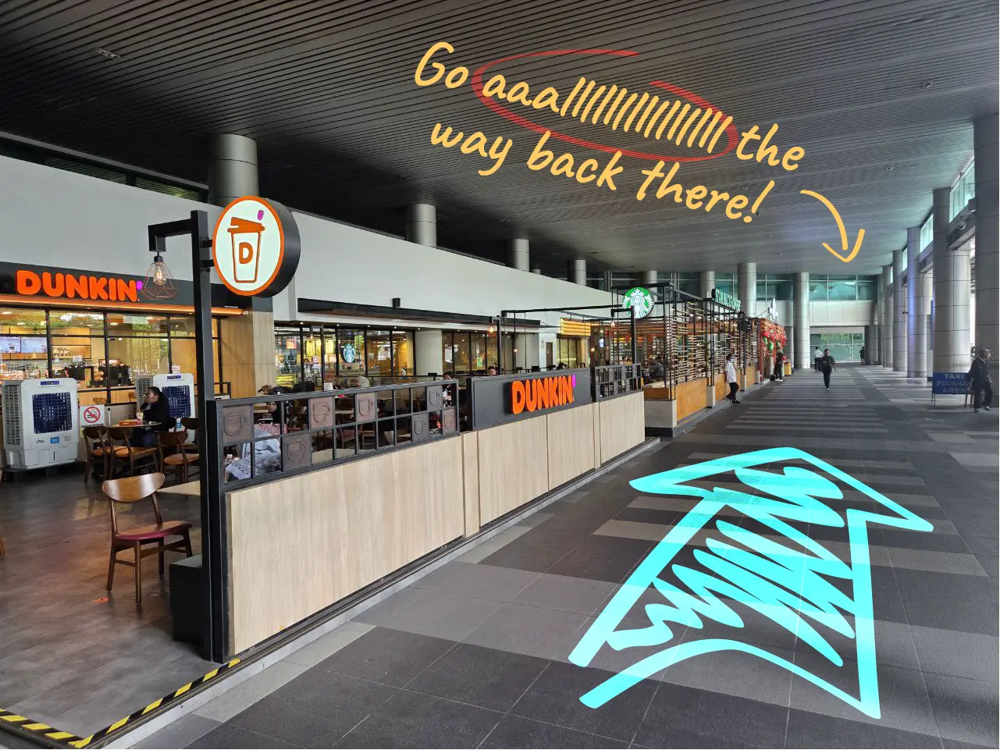
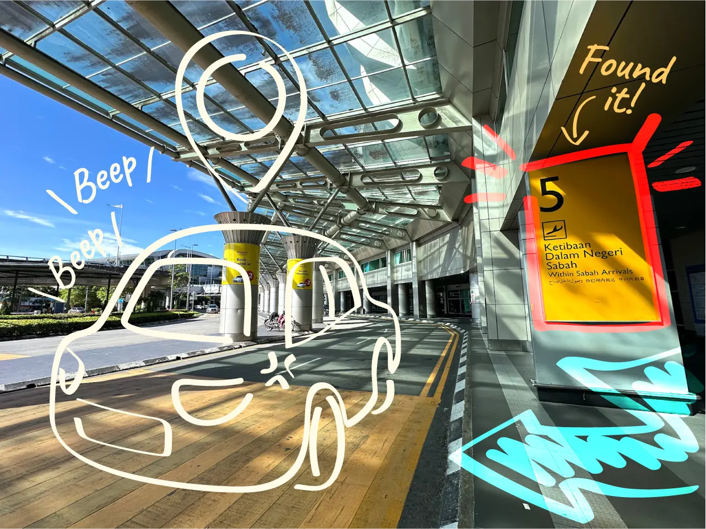

Shot on BAHmate Pro X
Once leaving the security checking (in Arrival Hall 1/2), turn left and head towards the KFC. Exit through the side door to the outer section.

Shot on BAHmate Pro X
Walk past some eateries (Dunkin / Starbucks / Kopi Ping) and head all the way down to Arrival Hall 3.

Shot on BAHmate Pro X
You would see a Pillar 5 - Within Sabah Arrivals on your right. You may select that as your pickup spot.